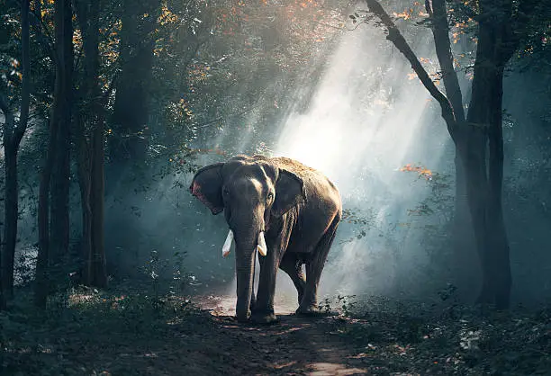
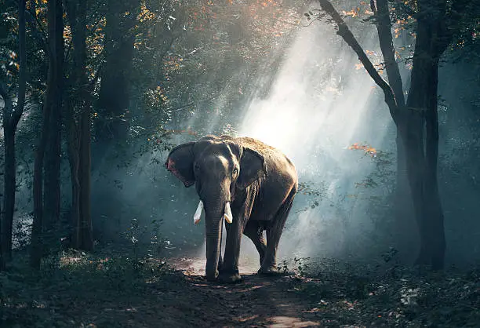

The life of a monkey is full of ups and downs. Like us, monkeys form strong friendships and bitter rivalries. They fight for each other and take care of one another. And the leader of a monkey troop, when deposed, will even exhibit signs of depression. When we watch their behavior we get the sense that their emotional lives may share something in common with our own
Monkeys have a complex social system, and they form relationships with each other on an individual basis. When they encounter each other, monkeys will remember back to past interactions. Old rivals can be greeted with rage if they swing into the wrong part of the jungle. As we see in Clever Monkeys, such skirmishes sometimes even end in death. By the same token, monkeys will remember the help of a friend. Grooming, for example, shows affection and respect. And when it’s time for a fight, a monkey with whom you’ve built a friendship is much more likely to fight at your side — or clean your wounds afterward!
In Clever Monkeys, when the leader of a troop of toque macaques is killed, the others gather in silence around his body. As though they truly feel remorse, even his old rivals now seem to show their deference, tenderly touching their fallen leader. Everyone is affected by death, but a monkey mother that has lost her infant seems especially hard-hit. In nearly all species of monkey, the mother will carry her child’s lifeless body around with her for days. Do these examples show that monkeys share our emotional response to death? Some researchers suggest that while they may not understand death in the same way we do, monkeys and apes do seem share our tendency to have trouble accepting it
Monkeys suffer from stress, much like we do, and often it seems to relate to social problems. For example, baboon society is extremely competitive. Males who try to move up the social ladder and fail can suffer from high blood pressure and even ulcers. But those at the top don’t necessarily have it any better: high-ranking males who fall from power often exhibit signs of depression.
A mother monkey’s attention and care during her child’s infancy has a significant impact on the young monkey’s emotional development. Infant rhesus and pigtail monkeys react to the absence of their mothers in much the way we would expect a human child to react. At first, they coo for her and search excitedly. However, after a while, they will stop playing with others and take on a slouched posture. A lack of love from mother and peers during infancy has an even greater effect later in life. In one study, three-year-old rhesus monkeys that were isolated during their first year of life showed much more aggression toward unknown monkeys than did their peers. From maintaining complex social relationships, to suffering anxiety and depression, there are many trials in the life of a monkey. Perhaps the next thing monkeys should consider evolving is a good therapist.
 
